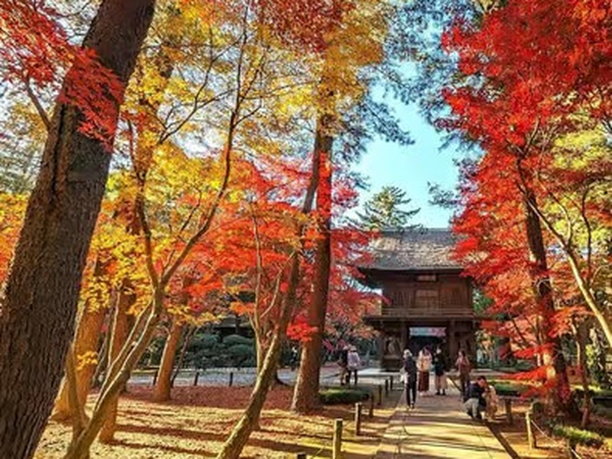

Heirinji Temple Tour: A Zen Monastery Walk 30 Minutes from Ikebukuro

Heirinji is a working Rinzai Zen training monastery just over the Tokyo border in Saitama, about 30 minutes from Ikebukuro by train. Its forest paths are some of the quietest you can walk near central Tokyo, and on most days you can share them with almost no other visitors.
This small-group walk, guided by Hide, is a loop through the monastery grounds rather than a straight line to the main hall, and it ends with matcha in a teahouse-style café in the woods.
- Duration
- About 2.5 hours
- Group size
- Small group, maximum 4 guests
- Getting there
- About 30 minutes from Ikebukuro by train
- Includes
- Local English-speaking guide, matcha and a Japanese sweet
- Cancellation
- Free cancellation up to 24 hours before the start, per the GetYourGuide listing
What you will see
The route passes the Hojo garden, the Matsudaira clan cemetery — feudal lords resting under moss, with almost no English signage — and a quiet pilgrimage path that connects ten tombs through the trees. Certain areas of the monastery are closed to visitors because monks still live and train here, which is a large part of why the atmosphere has survived.
Matcha in the woods
The walk finishes at Hirune no Mori Chuei, a teahouse-style café a short walk from the temple grounds, with seasonal tea and a handmade Japanese sweet.
When to go
The grounds are atmospheric year-round. In November more than a hundred varieties of maple turn the valley red and gold, which makes it one of the better autumn-foliage spots in the greater Tokyo area without the crowds of Kyoto or Nikko. Read the full story in The Zen Monastery in the Woods.
Book this tour
Heirinji Temple Monks' Path & Forest Meditation Walk — small group (max 4), English-guided, about 30 minutes from Ikebukuro.
Check dates & book on GetYourGuide →Some links on this page are affiliate links — booking through them supports this site at no extra cost to you.
Frequently asked questions
How far is Heirinji from Tokyo?
Heirinji is in Niiza, Saitama, roughly 30 minutes from Ikebukuro by train — closer to central Tokyo than Kamakura or Nikko.
Is this tour suitable for people who know nothing about Zen?
Yes. The walk explains what you are seeing and why, and no prior knowledge is needed.
How many people are in the group?
The tour is limited to four guests, so there is room to ask questions and move at a relaxed pace.
Can I book this tour on GetYourGuide?
Yes. Dates and availability are shown on the GetYourGuide listing linked on this page.